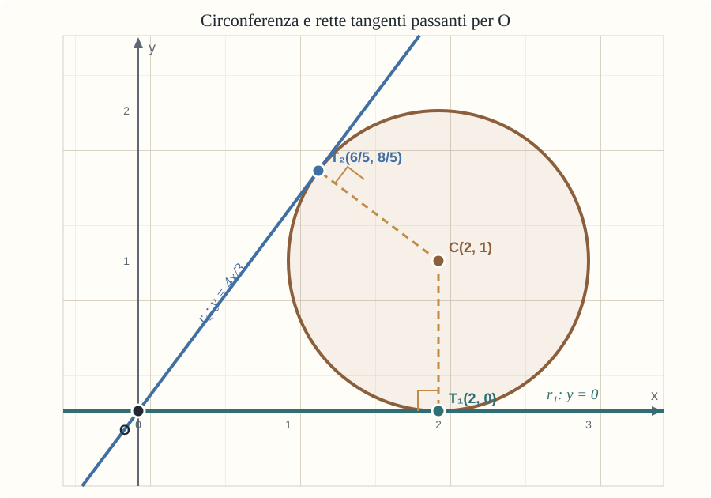

Tradurre la tangenza in una condizione algebrica
Comprendere come:
- ricavare centro e raggio dall’equazione di una circonferenza;
- utilizzare la distanza tra un punto e una retta;
- imporre la tangenza mediante l’annullamento del discriminante;
- determinare i punti di tangenza con un sistema;
- controllare separatamente l’eventuale retta verticale.
Due tangenti passanti per l’origine
Consideriamo la circonferenza:
La forma canonica dell’equazione di una circonferenza è:
dove C(x0, y0) è il centro e R è il raggio. Nell’equazione data si leggono quindi C(2, 1) e R = 1.
La forma generale è invece:
Determina le equazioni delle rette passanti per l’origine O(0, 0) e tangenti alla circonferenza. Calcola poi le coordinate dei punti di tangenza.
Prova a risolvere il problema in due modi: con la distanza del centro dalla retta e imponendo che il sistema retta-circonferenza abbia una sola soluzione.
APRI LO SVOLGIMENTO RAGIONATO
1. Dalla forma generale al centro e al raggio
Completiamo i quadrati nell’equazione generale:
Possiamo così riconoscere:
La circonferenza assegnata, sviluppata, diventa:
In questo caso a = −4, b = −2 e c = 4: ritroviamo C(2, 1) e R = 1.
2. Primo metodo: distanza del centro dalla retta
Se una retta ha equazione ax + by + c = 0 e P(x0, y0) è un punto, la loro distanza è:
Una retta non verticale passante per O ha equazione y = mx, cioè mx − y = 0. È tangente se la distanza del centro C(2, 1) dalla retta è uguale al raggio:
Elevando al quadrato e semplificando otteniamo:
Quindi:
3. Secondo metodo: sistema e discriminante
Mettiamo a sistema la circonferenza e la retta generica y = mx:
Sostituendo y = mx nell’equazione della circonferenza si ottiene:
Una retta è tangente quando ha un solo punto in comune con la circonferenza. L’equazione di secondo grado deve quindi avere discriminante uguale a zero:
Semplificando:
da cui si ritrovano m = 0 e m = 4/3. Le due rette tangenti sono:
4. Controlliamo la retta verticale
Scrivendo y = mx non abbiamo considerato la retta verticale passante per l’origine, cioè x = 0. La sua distanza da C(2, 1) è 2, diversa dal raggio 1: non è tangente.
5. Troviamo i punti di tangenza
Per la retta r1: y = 0 risolviamo:
Si ricava (x − 2)2 = 0, quindi il primo punto di tangenza è T1(2, 0).
Per la retta r2: y = (4/3)x risolviamo:
L’equazione in x si riduce a:
Pertanto x = 6/5 e y = 8/5. Il secondo punto di tangenza è T2(6/5, 8/5).
6. Leggiamo la situazione nel piano

Confondere dati e condizioni
Nella forma generale il centro non è C(a, b), ma C(−a/2, −b/2). Nel secondo procedimento si annulla il discriminante dell’equazione di secondo grado, non un determinante.
Inoltre y = mx descrive soltanto le rette non verticali: x = 0 deve essere controllata a parte.
Una sola intersezione
Le condizioni d(C, r) = R e Δ = 0 dicono la stessa cosa in due linguaggi diversi: la retta ha esattamente un punto in comune con la circonferenza.
Vuoi confrontare il tuo procedimento?
Se un passaggio ti ha creato difficoltà, puoi raccontarmi come hai affrontato l’esercizio e da quale punto vorresti ripartire.